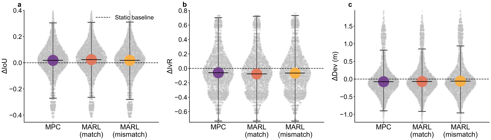
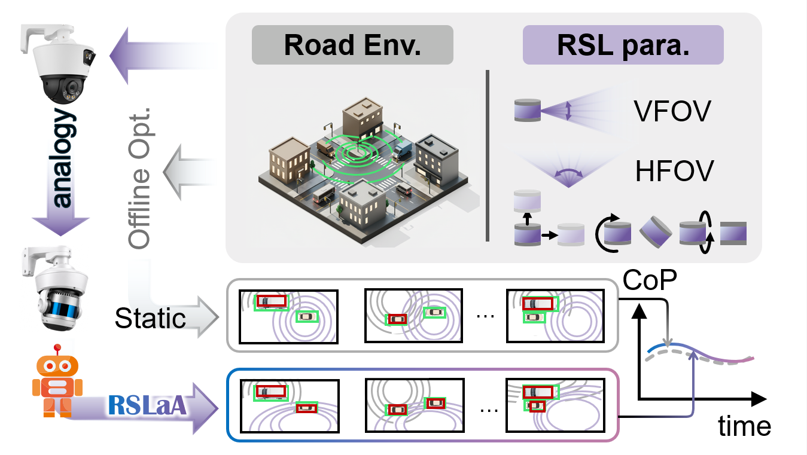
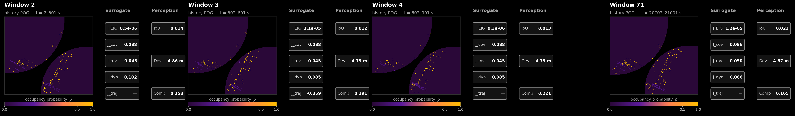
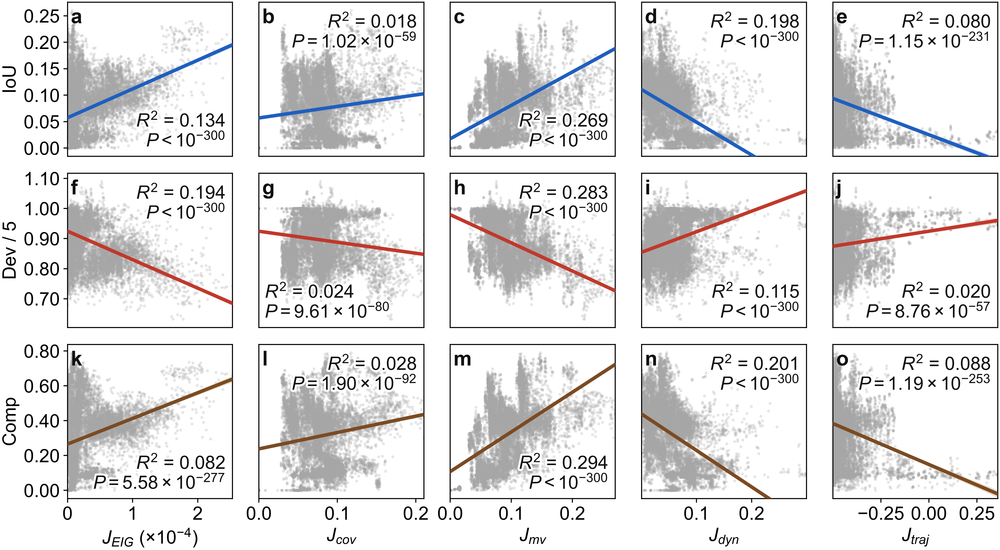
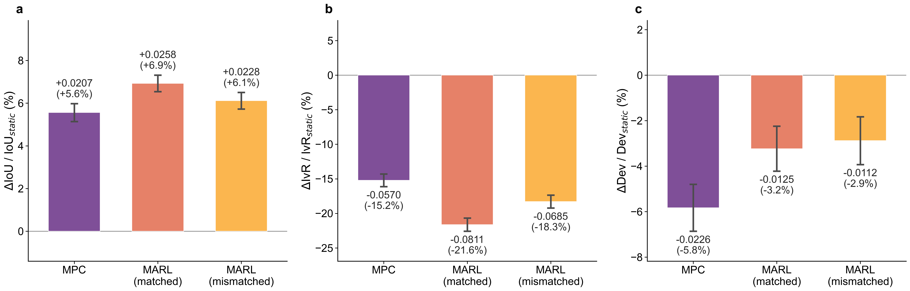
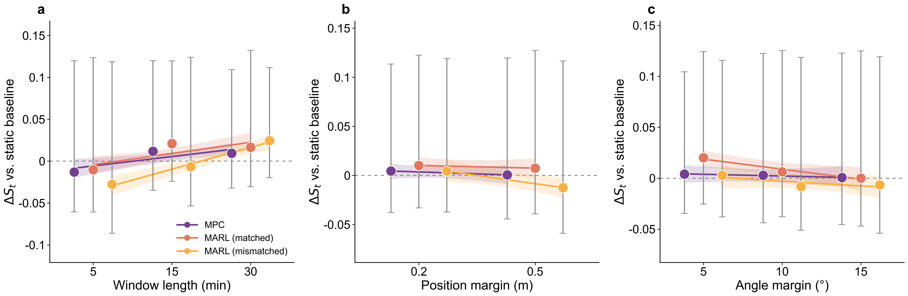
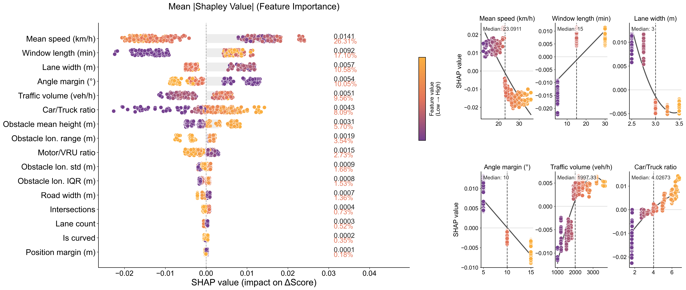
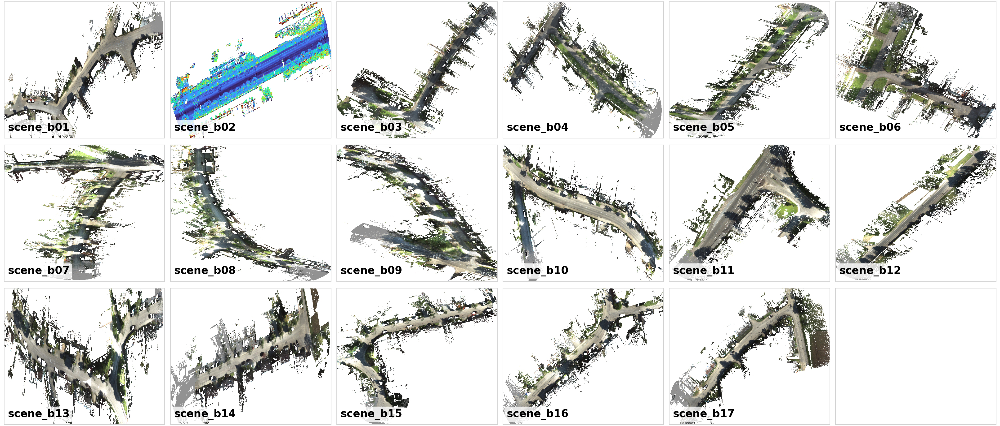
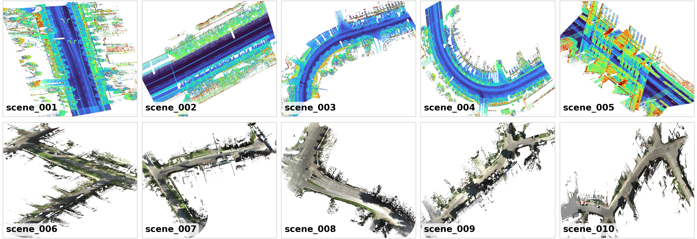

Frame-level deltas
ΔIoU, ΔIvR and ΔDev of every frame against the static run of the same scenario. Medians move in the favourable direction for all three controllers.

Preprint · 2026
Roadside LiDARs are usually configured once and left untouched. RSLaA turns every roadside LiDAR into an agent that re-optimises its pose at each decision window, using only a causal, history-based surrogate metric—no ground truth at decision time.
Paper link will be added upon publication.
A placement that is optimal on average can be far from optimal at any given moment — especially when a dense stream of vehicles systematically shadows a critical region from a fixed viewpoint. Yet a deployed system cannot know whether a candidate pose will help, because ground truth is unavailable at decision time.
RSLaA therefore scores candidate poses with a surrogate metric computed only from the historical probabilistic occupancy grid. Five candidates are validated against future-window perception labels; multi-view coverage emerges as the most reliable predictor. On top of this signal, adaptive configuration — receding-horizon MPC and a lightweight MAPPO policy — re-aims the sensors window by window.
Every decision window pairs five history-only surrogate metrics with detector-agnostic perception labels measured in the next window, so that correlation — not intuition — selects the decision core.

Historical POGs and per-window records from one benchmark run. Each column is a decision window: five surrogate values on the left, IoU / Dev / Comp labels on the right.
The benchmark tiles 17 point-cloud sites and 25 traffic scenarios into gap-free rolling windows of 5, 15 and 30 minutes. At each decision boundary, six candidate configurations of two to three heterogeneous LiDARs are proposed within the pose margins, scored from history only, and then replayed at high fidelity to obtain their true perception labels.
Five surrogates × three perception labels per candidate. Sites used for benchmarking and for deployment are disjoint.

10 sites · 89 six-hour scenarios · 890 evaluation runs
Real roadside point clouds · urban arterials, signalised intersections and curves · all strategies share identical initial poses
Across 10 deployment sites and 89 six-hour scenarios, the three adaptive strategies improve perception over the static baseline while sharing exactly the same initial poses, sensor suites and traffic data.

ΔIoU, ΔIvR and ΔDev of every frame against the static run of the same scenario. Medians move in the favourable direction for all three controllers.

IoU +5.6 / +6.9 / +6.1%, invalid-box rate −15.2 / −21.6 / −18.3%, and Dev −5.8 / −3.2 / −2.9% for MPC, MARL (matched) and MARL (mismatched).

Window length dominates: gains turn positive from 15 min and peak at 30 min. Pose margins are second-order, so tight settings (≈0.2 m, 5°) are sufficient.
A gradient-boosted model with TreeSHAP attributes the per-run perception gain to traffic and geometry. Adaptive reconfiguration pays off when many small, densely packed objects must be resolved — not when the road is wide and fast.

Mean speed (31%), window length (26%) and lane width (16%) dominate. Position margin is the least important factor (≈0%): once the context is favourable, the controller choice and the margin settings are second-order.
Deployment recipe: predict whether a site will benefit, then use a 15–30 min window with tight margins instead of tuning one global configuration.

Sixteen KITTI-360 segments plus one WHU-Urban3D mobile-mapping site.

Straight arterials, signalised and unsignalised intersections, and curves — disjoint from the benchmark sites.